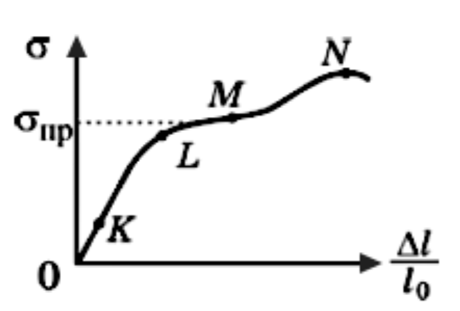

Графік залежності механічної напруги $\sigma$ від відносного видовження $\epsilon$ ($\epsilon = \frac{\Delta l}{l_0}$)

Помилка: файл graph_74_3.png не знайдено.Використовуйте точки K, L, M, N на рисунку для аналізу залежності $\sigma(\epsilon)$.